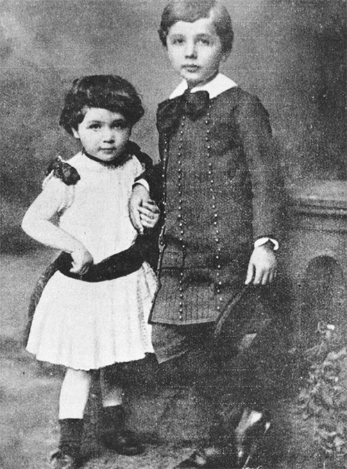

Maja (ba tuổi) và Albert Einstein (năm tuổi)
Ông chậm biết nói. Sau này, ông nhớ lại: “Cha mẹ tôi lo đến mức họ phải nhờ bác sỹ khám”. Ngay cả sau khi ông bắt đầu biết nói, lúc hơn hai tuổi, ông mắc một tật khiến người bảo mẫu của gia đình đặt cho ông cái tên “der Depperte” – cậu nhóc, còn những thành viên khác trong gia đình xem ông “gần như chậm phát triển”. Mỗi khi có điều gì muốn nói, ông thử lẩm nhẩm với chính mình trước, cho đến khi nó nghe rành mạch đủ để phát thành tiếng. Người em gái mà ông rất mực quý mến nhớ lại: “Mỗi câu anh ấy nói ra, bất kể nó thông thường thế nào đi nữa, anh ấy đều lẩm nhẩm lặp lại”. Theo bà, chuyện đó thật đáng lo: “Anh ấy gặp khó khăn với ngôn ngữ đến mức những người xung quanh đều sợ anh ấy chẳng bao giờ học nổi.”
Sự chậm phát triển của ông lại kết hợp với tính nổi loạn bất tuân quyền uy, khiến một giáo viên đuổi học ông còn một giáo viên khác làm câu chuyện trở nên lý thú khi cho rằng ông sẽ chẳng bao giờ làm nên trò trống gì. Những điểm này đã biến Einstein thành vị thánh bảo hộ cho những học sinh xao lãng ở khắp nơi. Cũng chính những đặc điểm này đã giúp ông trở thành, như sau này ông ngờ ngợ, thiên tài khoa học sáng tạo nhất thời hiện đại.
Sự tự mãn xem thường quyền lực của ông dẫn ông đến việc nghi ngờ những kiến thức đã được thừa nhận theo lối mà những sinh viên được đào tạo bài bản ở các học viện chẳng bao giờ thấy cần phải đặt lại vấn đề. Còn về chuyện chậm biết nói của mình, ông tin rằng chính nó cho phép ông không khỏi kinh ngạc khi quan sát các hiện tượng hằng ngày mà những người khác cho là hiển nhiên. Einstein có lần giải thích: “Khi tôi tự hỏi làm thế nào tôi lại là người khám phá ra Thuyết Tương đối, thì có vẻ nguyên do nằm ở hoàn cảnh sau đây. Những người lớn bình thường chẳng bận tâm suy nghĩ về các vấn đề không gian và thời gian. Đây là những điều mà người ta thường chỉ nghĩ khi còn nhỏ. Nhưng tôi phát triển chậm đến mức mãi đến khi trưởng thành, tôi mới bắt đầu thắc mắc về không gian và thời gian. Bởi thế mà tôi có thể tìm hiểu vấn đề này sâu hơn một đứa trẻ bình thường.”
Có lẽ các vấn đề về sự chậm phát triển của Einstein đã bị nói quá, thậm chí có thể bởi chính ông, vì trong một số bức thư, ông bà đáng mến của ông nói rằng ông cũng lanh lợi và đáng yêu như mọi đứa cháu khác. Nhưng trong suốt cuộc đời, Einstein đúng là mắc một dạng nhẹ của chứng nhại lời, khiến ông lẩm bẩm nhắc lại các cụm từ hai hay ba lần, đặc biệt nếu chúng làm ông thích thú. Ông thường thích suy nghĩ bằng hình ảnh, nhất là trong những thí nghiệm tưởng tượng nổi tiếng, chẳng hạn tưởng tượng ra mình đang quan sát những tia sét khi ngồi trên một tàu lửa đang chuyển động, hoặc trải nghiệm trọng lực khi đứng trong một thang máy đang rơi. Sau này, ông nói với một nhà tâm lý học: “Tôi rất hiếm khi nghĩ bằng lời. Một ý nghĩ nảy ra, và sau đó tôi mới có thể cố diễn tả nó bằng lời.”
Cả hai bên nội ngoại gia đình của Einstein, trong ít nhất hai thế kỷ, đều là thương nhân và dân buôn bán người Do Thái, có mức sống khiêm tốn tại những làng quê thuộc vùng Swabia, phía tây nam nước Đức. Sau mỗi thế hệ, họ ngày càng hòa nhập vào nền văn hóa Đức mà họ yêu mến, hay chí ít là họ nghĩ vậy. Mặc dù có văn hóa và bản năng Do Thái, nhưng họ không mấy quan tâm tới tôn giáo của người Do Thái hay các nghi lễ của nó.
Einstein thường bác bỏ vai trò của di sản mà ông được thừa hưởng đối với quá trình định hình con người ông. Lúc cuối đời, ông có nói với một người bạn: “Việc tìm hiểu tổ tiên của tôi chẳng dẫn đến đâu đâu.” Điều đó không hoàn toàn đúng. Ông may mắn được sinh ra trong một gia đình có trí tuệ, có lối suy nghĩ độc lập, biết xem trọng giáo dục, và cuộc sống của ông chắc chắn chịu ảnh hưởng, theo cả hướng tốt đẹp lẫn bi kịch, do thuộc về một di sản tôn giáo có truyền thống trí tuệ nổi trội và có một lịch sử vừa là kẻ ngoài cuộc vừa lang thang nay đây mai đó. Tất nhiên, việc ông ngẫu nhiên là người Do Thái ở nước Đức đầu thế kỷ XX càng khiến ông thành người ngoài cuộc và kẻ lang thang hơn nữa, hơn cả những gì mà ông nghĩ tới – nhưng điều đó cũng là một phần không thể tách rời trong con người ông và đối với vai trò của ông trong lịch sử thế giới.
Cha của Einstein, ông Hermann, sinh năm 1847 tại ngôi làng Buchau ở Swabia, nơi có cộng đồng người Do Thái phát triển, và họ bắt đầu được hưởng quyền làm bất cứ nghề nào. Hermann thể hiện “thiên hướng toán học rõ rệt”, và gia đình ông đủ sức cho ông đi học trung học ở ngôi trường ở Stuttgart cách làng 75 dặm13 về phía bắc. Thế nhưng họ không đủ tiền cho ông được học đại học, do hầu hết các trường đều không nhận người Do Thái trong bất cứ trường hợp nào, vì vậy ông trở về Buchau và bắt đầu kinh doanh.
Vài năm sau đó, Hermann cùng cha mẹ tham gia cuộc di cư ồ ạt của người Do Thái ở các vùng nông thôn nước Đức tới các trung tâm công nghiệp hồi cuối thế kỷ XIX, cả gia đình chuyển tới thành phố Ulm thịnh vượng hơn, cách đó 35 dặm, nơi kiêu hãnh với khẩu hiệu “Người Ulm là những nhà toán học”.
Ở đó, ông chung vốn mở một công ty nệm lông vũ với người anh họ. Theo hồi tưởng của con trai ông, ông là người “cực kỳ thân thiện, nhẹ nhàng và sáng suốt”. Với bản tính nhẹ nhàng dễ biến thành tính dễ bị sai khiến, Hermann cho thấy mình không thích hợp làm doanh nhân, và mãi mãi không có óc thực tế trong các vấn đề tài chính. Nhưng tính nhẫn nhịn đó quả thật khiến ông rất thích hợp trong vai trò người đàn ông tốt bụng của gia đình, và là người chồng tốt của một người vợ cương quyết. Năm 29 tuổi, ông cưới Pauline Koch, cô kém ông 11 tuổi.
Cha của Pauline, Julius Koch, đã gây dựng một sản nghiệp đáng kể bằng nghề buôn bán ngũ cốc và cung cấp hàng hóa cho cung điện hoàng gia Württemberg. Pauline thừa hưởng óc thực tế của cha mình, nhưng bà đã thêm vào tính khí khắc khổ đó chút dí dỏm, cùng những câu châm biếm và nụ cười vừa khiến người khác không khỏi bật cười, vừa gây tổn thương (đây là những nét tính cách mà bà đã truyền lại cho con trai mình). Theo ý kiến chung, cuộc hôn nhân giữa Hermann và Pauline khá hạnh phúc, tính cách mạnh mẽ của bà rất “hài hòa” với sự thụ động nơi ông.
11 giờ 30 phút sáng thứ Sáu, ngày 14 tháng Ba năm 1879, con trai đầu lòng của họ cất tiếng khóc chào đời ở Ulm, vùng vừa nhập vào Đế quốc Đức mới cùng các vùng khác của Swabia. Ban đầu, Pauline và Hermann định đặt tên cho cậu bé là Abraham theo tên của ông nội. Nhưng rồi họ cảm thấy cái tên đó nghe “Do Thái quá”. Vì vậy, họ giữ chữ cái đầu là A và đặt cho cậu bé cái tên Albert Einstein.
Năm 1880, một năm sau khi Albert ra đời, công ty nệm lông vũ của Hermann phá sản; em trai ông, Jakob, vốn đã mở một công ty cung cấp khí đốt và điện ở Munich, thuyết phục ông chuyển tới đó. Không như Hermann, Jakob, em út trong năm anh chị em, đã học qua đại học, và nhận bằng kỹ sư. Khi họ phải cạnh tranh để có được hợp đồng cung cấp máy phát điện và chiếu sáng cho các thành phố ở miền Nam nước Đức, thì Jakob phụ trách khâu kỹ thuật, còn Hermann góp chút ít kỹ năng kinh doanh của mình cộng với, có lẽ quan trọng hơn, các khoản vay vốn từ gia đình nhà vợ.
Pauline và Hermann sinh con thứ hai cũng là con út vào tháng Mười một năm 1881, cô con gái này được đặt tên Maria, nhưng cái tên Maja ngắn gọn hơn lại được dùng suốt đời cô. Khi lần đầu được nhìn cô em gái mới sinh, cậu bé Albert tin rằng cô bé trông như một món đồ chơi tuyệt vời của mình. Cậu nhìn cô bé và thốt lên: “Vâng, thế những chiếc bánh xe ở đâu ạ?” Đây có lẽ không phải là câu hỏi sâu sắc nhất, nhưng nó chứng tỏ rằng khi ông ba tuổi, những thách thức của việc sử dụng ngôn ngữ không cản trở ông đưa ra những bình luận đáng nhớ. Dù hồi nhỏ hai anh em cãi nhau vài lần, nhưng sau này Maja đã trở thành người bạn tâm giao thân thiết nhất của ông.
Gia đình Einstein sống trong một ngôi nhà tiện nghi có cây cối sum suê và khu vườn đẹp ở vùng ngoại ô Munich, một cuộc sống mang hơi hướng tư sản trung lưu, chí ít là trong phần lớn thời thơ ấu của Albert. Munich được ông vua nhiệt tình Ludwig II (1845-1886) dày công chăm chút diện mạo kiến trúc và thành phố này kiêu hãnh vì có vô số nhà thờ, phòng triển lãm mỹ thuật, và những phòng hòa nhạc chuộng những tác phẩm của một cư dân là Richard Wagner. Năm 1882, ngay sau khi gia đình Einstein chuyển đến, thành phố này có khoảng 300.000 dân, 85% số đó theo Công giáo, 2% theo Do Thái giáo, và đây là nơi tổ chức triển lãm về điện đầu tiên của nước Đức, tại đó đèn điện được giới thiệu để đưa vào sử dụng cho các con đường của thành phố.
Khu vườn sau nhà Einstein thường tràn ngập tiếng cười nói của những người anh chị em họ và lũ trẻ con. Nhưng ông không tham gia những trò chơi ầm ĩ đó, mà “bỏ hết thì giờ cho những việc trầm lặng hơn”. Một cô giáo dạy kèm đặt cho ông biệt danh “Cha Chán”14. Nhìn chung, ông là một người cô độc, suốt đời ông đều có khuynh hướng đó mặc dù ở ông nó là một dạng thờ ơ đặc biệt, xen lẫn với nó là sự hứng thú với tình thân bạn bè và sự đồng hành trí tuệ. Theo Philipp Frank, một đồng nghiệp khoa học lâu năm của ông: “Ngay từ đầu, ông ấy đã có khuynh hướng tách mình khỏi những đứa trẻ đồng lứa, đắm trong mơ mộng và đăm chiêu suy nghĩ.”
Ông thích giải các câu đố, lắp dựng các cấu trúc phức tạp bằng bộ đồ chơi xếp hình của mình, chơi với động cơ hơi nước mà chú ông tặng và dựng nhà bằng các quân bài. Theo Maja, Einstein có thể dựng các khối bằng quân bài lên đến 14 tầng. Dù có trừ hao những ký ức của cô em gái ngưỡng mộ người anh trai, thì có lẽ vẫn có nhiều điều là thật trong tuyên bố của Maja rằng “tính kiên trì và gan lì rõ ràng đã là một phần cá tính của anh ấy”.
Ông cũng hay nổi cáu, ít nhất là khi còn bé. Maja nhớ lại: “Những lúc đó, mặt anh ấy đổi sang màu vàng, chóp mũi thì trắng như tuyết và anh ấy không còn kiểm soát được mình nữa.” Lúc năm tuổi, có lần ông vớ lấy một chiếc ghế và ném thẳng vào một gia sư, người này đã chạy mất và không bao giờ quay lại. Cái đầu của Maja trở thành đích nhắm của đủ các vật cứng. Về sau, bà nói đùa: “Phải có cái đầu thật cứng thì mới làm em của một trí thức được.” Khác với tính kiên trì và gan lì, cuối cùng ông cũng bỏ được tính dễ nổi cáu.
Nói theo ngôn ngữ của các nhà tâm lý, khả năng hệ thống hóa (nhận diện các quy luật chi phối một hệ thống) của cậu bé Einstein cao hơn nhiều so với khả năng thấu cảm (hiểu và quan tâm đến cảm xúc của người khác), do đó một số người đặt câu hỏi rằng: liệu ông có những triệu chứng nhẹ của chứng rối loạn phát triển nào hay không. Tuy nhiên, cần chú ý rằng, dù có thái độ thờ ơ và đôi khi nổi loạn, ông quả thật có khả năng kết thân và thấu cảm cả với các đồng nghiệp của mình nói riêng, cũng như với nhân loại nói chung.
Những nhận thức quan trọng trong thời thơ ấu thường mất dần trong ký ức. Nhưng đối với Einstein, một trải nghiệm diễn ra khi ông chừng bốn hay năm tuổi đã làm thay đổi cuộc đời ông, và khắc sâu mãi mãi trong tâm trí ông – cũng như trong lịch sử khoa học.
Một hôm, ông bị ốm, phải nằm trên giường, cha ông mua cho ông một chiếc la bàn. Về sau, ông nhớ lại mình đã phấn khích khi thấy được sức mạnh bí ẩn của nó, đến nỗi ông run rẩy và lạnh hết cả người. Việc chiếc kim nam châm chuyển động cứ như bị một trường lực ẩn nào đó tác động, thay vì thông qua phương pháp cơ học quen thuộc như chạm vào hay tiếp xúc, đã gây ra cảm giác kinh ngạc, đây chính là động lực thúc đẩy ông suốt cuộc đời. Một lần, khi nhớ lại sự việc này, ông đã viết: “Tôi vẫn có thể nhớ – hay chí ít là tôi tin mình có thể nhớ – rằng trải nghiệm này đã tạo nên một ấn tượng sâu sắc và lâu dài trong tôi. Phải có cái gì đó ẩn rất sâu đằng sau mọi việc.”
Trong cuốn Einstein in love [Einstein khi yêu], Dennis Overbye viết “đó là một câu chuyện mang tính biểu tượng, cậu bé run rẩy trước trật tự vô hình ẩn sau thực tại hỗn độn”. Bộ phim IQ sử dụng hình ảnh Einstein, do Walter Matthau đóng, đeo chiếc la bàn lên cổ, và hình ảnh đó là trọng tâm trong cuốn sách thiếu nhi có tên Rescuing Albert’s Compass [Giải cứu chiếc la bàn của Albert] của Shulamith Oppenheim, mà cha vợ của tác giả là người đã nghe câu chuyện này từ chính Einstein vào năm 1911.
Sau khi bị mê hoặc bởi sự trung thành của chiếc kim la bàn với một trường vô hình nào đó, Einstein đã cống hiến cả đời cho các lý thuyết trường và xem đây là cách để mô tả tự nhiên. Các lý thuyết trường sử dụng những đại lượng toán học, chẳng hạn như số, vector hay tensor, để mô tả các điều kiện ở một điểm bất kỳ trong không gian sẽ tác động tới vật chất hay một trường khác như thế nào. Chẳng hạn, trong trường hấp dẫn hoặc trường điện từ có những lực có thể tác dụng lên một hạt ở điểm bất kỳ, và các phương trình của một lý thuyết trường mô tả những lực này thay đổi như thế nào khi hạt đó di chuyển qua vùng này. Đoạn đầu trong bài báo vĩ đại năm 1905 của ông về Thuyết Tương đối hẹp mở đầu bằng việc xét các hiệu ứng của điện trường và từ trường. Thuyết Tương đối rộng của ông dựa trên các phương trình mô tả trường hấp dẫn. Đến tận cuối đời, ông vẫn kiên trì viết nguệch ngoạc thêm các phương trình trường với hy vọng chúng sẽ đặt nền tảng cho một học thuyết về vạn vật. Như nhà nghiên cứu lịch sử khoa học Gerald Holton đã viết, Einstein xem “khái niệm cổ điển về trường là cống hiến lớn nhất cho tinh thần khoa học”.
Quanh khoảng thời gian này, mẹ ông, một nghệ sĩ piano tài năng, cũng tặng ông một món quà sẽ theo ông suốt cuộc đời. Bà cho ông học chơi vĩ cầm. Đầu tiên ông phát bực với phương pháp dạy máy móc. Nhưng sau khi được nghe các bản sonat của Mozart, với ông, âm nhạc vừa kỳ ảo, vừa đầy cảm xúc. Ông nói: “Tôi tin rằng tình yêu là người thầy tốt hơn là ý thức nghĩa vụ, ít nhất là đối với tôi.”
Chẳng bao lâu sau, ông đã chơi được các bản song tấu của Mozart cùng mẹ. Sau này, Einstein kể với một người bạn: “Âm nhạc của Mozart trong sáng và đẹp đến nỗi tôi thấy nó phản ánh vẻ đẹp nội tại của chính vũ trụ.” Trong một nhận xét thể hiện quan điểm của ông về toán học và vật lý cũng như về Mozart, ông bổ sung: “Tất nhiên, giống như tất cả những vẻ đẹp vĩ đại khác, âm nhạc của ông cực kỳ đơn giản.”
Âm nhạc không phải là trò giải trí đơn thuần. Trái lại, nó giúp ông tư duy. Hans Albert, con trai ông nhận xét: “Mỗi khi cha cảm thấy mình đã đi đến đường cùng hay phải đối diện với một thách thức khó khăn trong công việc, ông sẽ tìm đến âm nhạc, và việc đó sẽ giải quyết tất cả những khó khăn đó.” Thế nên, cây vĩ cầm thật sự hữu ích trong những năm tháng ông sống một mình ở Berlin, vật lộn với Thuyết Tương đối rộng. Một người bạn nhớ lại: “Ông ấy thường chơi vĩ cầm trong bếp lúc khuya, ngẫu hứng sáng tác giai điệu khi suy ngẫm những vấn đề phức tạp. Thế rồi, đột nhiên, khi đang chơi giữa chừng, ông ấy sẽ reo lên phấn khích: ‘Tôi hiểu rồi!’ Cứ như là bằng cảm hứng, câu trả lời cho vấn đề đó đã đến khi ông ấy đang chơi nhạc vậy.”
Sự trân trọng mà ông dành cho âm nhạc, nhất là cho Mozart, hẳn đã cho thấy cảm nhận của ông đối với sự hài hòa của vũ trụ. Như Alexander Moszkowski, người viết một cuốn tiểu sử về Einstein năm 1920 dựa trên các cuộc chuyện trò với ông, đã nhận thấy: “Âm nhạc, Tự nhiên và Thượng đế trở nên hòa quyện nơi ông trong một phức cảm, thành một thể thống nhất về mặt tinh thần, mà dấu tích của nó chưa bao giờ tan biến.”
Trong suốt cuộc đời mình, Albert Einstein luôn giữ được trực giác và sự kinh ngạc của một đứa trẻ. Ông chưa bao giờ mất đi cảm giác ngạc nhiên trước sự kỳ ảo của các hiện tượng tự nhiên như từ trường, lực hấp dẫn, quán tính, gia tốc, tia sáng, mà những người trưởng thành thấy quá đỗi bình thường. Ông vẫn giữ được khả năng đồng thời có hai luồng suy nghĩ, băn khoăn khi thấy chúng mâu thuẫn, cũng như kinh ngạc khi phát hiện một sự thống nhất cơ bản. Sau này, ông viết cho một người bạn: “Những người như anh và tôi chẳng bao giờ già đi cả. Chúng ta không bao giờ chịu đứng yên, giống như những đứa trẻ tò mò, trước cái chốn bí ẩn vĩ đại mà chúng ta được sinh ra.”
Trong những năm tháng sau này, Einstein thường kể một câu chuyện vui về người chú theo thuyết bất khả tri, thành viên duy nhất của gia đình đến giáo đường Do Thái. Khi được hỏi tại sao ông làm vậy, người chú thường trả lời: “À, cháu chẳng bao giờ hiểu được đâu.” Trong khi đó, cha mẹ của Einstein “hoàn toàn không trọng tín ngưỡng” và cảm thấy chẳng việc gì phải làm việc đó. Họ không ăn theo lối của người Do Thái, cũng không đi lễ ở giáo đường, và cha ông thường gọi các nghi lễ Do Thái là “những trò mê tín từ đời thuở nào rồi”.
Khi Albert được sáu tuổi và phải đi học, cha mẹ ông chẳng bận tâm đến việc gần nhà mình không có trường Do Thái nào. Thay vào đó, ông được vào học tại một trường Công giáo lớn trong vùng, Petersschule. Là học sinh người Do Thái duy nhất trong số 70 học sinh của lớp, Einstein được tham gia khóa học thông thường về Công giáo, và ông vô cùng thích khóa học này. Thực tế là ông đạt thành tích tốt trong các khóa học về Công giáo đến mức ông còn giúp cả các bạn cùng lớp.
Một hôm, thầy giáo mang một chiếc đinh lớn tới lớp. Thầy nói: “Những chiếc đinh đóng Chúa Jesus vào thánh giá giống thế này đây.” Einstein sau này nhận xét rằng ông không cảm thấy sự phân biệt đối xử nào từ phía giáo viên. Ông viết: “Các thầy cô ở đây là những người có tinh thần tự do, họ không phân biệt tôn giáo.” Thế nhưng, các bạn học lại khác. Ông nhớ lại: “Tư tưởng bài Do Thái rất phổ biến trong đám trẻ học tại trường tiểu học khi ấy.”
Việc bị chế giễu trên quãng đường đến trường, cũng như về nhà vì “những đặc điểm chủng tộc mà những đứa trẻ đó ý thức rõ đến kỳ lạ” càng khắc sâu cảm giác là kẻ ngoài cuộc của ông, nó theo ông suốt cuộc đời. “Những trận đánh và những trận xỉ vả trên quãng đường từ trường về nhà diễn ra thường xuyên, nhưng hầu như không quá nguy hiểm. Tuy nhiên, chúng cũng đủ để khắc ghi, dù là với một đứa trẻ, ấn tượng rằng mình là kẻ ngoài cuộc.”
Lên chín tuổi, Einstein chuyển lên một trường trung học gần trung tâm Munich, trường Trung học Luitpold, một nơi có tiếng là tiến bộ, chú trọng vào các môn toán học, khoa học cũng như tiếng Latinh và Hy Lạp. Ngoài ra, ngôi trường này cũng có giáo viên dạy giáo lý cho ông và các học sinh Do Thái khác.
Bất chấp tinh thần thế tục của cha mẹ mình, hoặc cũng có thể chính vì điều này, Einstein bất chợt bộc lộ lòng nhiệt thành với Do Thái giáo. Em gái ông nhớ lại: “Anh ấy nhiệt thành đến nỗi tự mình tuân thủ các giới luật Do Thái giáo đến từng chi tiết.” Ông không ăn thịt lợn, duy trì chế độ ăn kiêng kosher và tuân thủ các giới luật cho ngày Sabbath, tất cả những việc này đều tương đối khó thực hiện khi các thành viên còn lại trong gia đình ông không chỉ không quan tâm mà gần như là xem thường những gì ông thể hiện. Ông thậm chí còn sáng tác những bài thánh ca ngợi ca Thượng Đế, và tự hát cho mình nghe trên đường đi học về.
Có một chuyện về Einstein mà nhiều người tin: ông từng trượt môn toán hồi còn đi học, khẳng định này có trong vô số cuốn sách và hàng nghìn trang web, kèm thêm câu, “như mọi người đều biết”, với mục đích trấn an những học sinh học kém. Nó thậm chí trở thành một bài trong mục báo nổi tiếng “Ripley’s Believe It or Not”15.
Thời thơ ấu của Einstein quả thật mang đến cho lịch sử nhiều chuyện kỳ lạ, thú vị, nhưng, rất tiếc, đây không phải là một trong số đó. Năm 1935, một giáo sĩ Do Thái ở Princeton đưa cho Einstein xem bài báo cắt từ mục Ripley với tiêu đề “Nhà toán học vĩ đại nhất hiện còn sống từng trượt môn toán”. Ông phá lên cười. “Tôi chưa bao giờ trượt môn toán,” ông đáp một cách thành thật. “Chưa đến 15 tuổi, tôi đã thành thạo các phép tính vi phân và tích phân rồi kia mà.”
Thực tế là ông là một học sinh giỏi, ít nhất là về mặt trí tuệ. Ở trường tiểu học, ông là học sinh giỏi nhất lớp. Hồi ông bảy tuổi, mẹ ông có lần nói với một người cô: “Hôm qua Albert có điểm. Cháu cô lại đứng đầu đấy.” Khi học trung học, ông không thích việc phải học một cách máy móc các ngôn ngữ như tiếng Latinh và Hy Lạp, sau này một triệu chứng mà ông cho là “trí nhớ kém đối với từ ngữ và văn bản” càng khiến vấn đề này trầm trọng. Nhưng ngay cả trong những khóa học đó, Einstein vẫn luôn đạt những điểm cao nhất. Nhiều năm sau, khi Einstein kỷ niệm sinh nhật lần thứ 50 của mình bên cạnh những câu chuyện về việc thiên tài vĩ đại này học hành tệ hại ra sao hồi học trung học, hiệu trưởng mới của trường tuyên bố sẽ công bố một bức thư cho thấy điểm của Einstein thật ra cao thế nào.
Về môn toán, chẳng những Einstein chưa từng trượt, mà còn “vượt xa yêu cầu của trường”. Theo lời kể của em gái ông, năm 12 tuổi, “anh ấy đã thích giải những bài toán số học ứng dụng phức tạp”, và ông quyết định xem xem liệu mình có thể tự học vượt môn hình học và đại số không. Cha mẹ ông mua trước cho ông sách giáo khoa để ông có thể nắm vững những kiến thức đó trong kỳ nghỉ hè. Ông không những học các cách chứng minh trong sách, mà còn bắt đầu xem xét các lý thuyết mới bằng cách cố gắng tự chứng minh chúng. “Các trò chơi và bạn bè đều bỏ quên. Suốt nhiều ngày liền, anh ấy ngồi một mình, say sưa tìm lời giải và không chịu bỏ cuộc khi chưa tìm ra.”
Chú Jakob Einstein của ông, một kỹ sư, đã giúp ông làm quen với niềm vui của môn đại số. Ông giải thích: “Đó là một môn khoa học vui tươi. Khi con thú mà ta đang săn tìm chưa bị tóm, ta tạm gọi nó là X và tiếp tục săn tìm cho tới khi bắt được nó.” Theo Maja nhớ lại, chú Jakob tiếp tục ra cho cậu bé Einstein những bài toán đố thậm chí khó hơn nữa “với sự ngờ vực mang dụng ý tốt về khả năng giải quyết các bài toán đố”. Khi hoàn thành xuất sắc, như mọi lần, Einstein “vô cùng vui sướng, và khi đó ông đã nhận thức được con đường mà tài năng đó sẽ dẫn mình đi”.
Trong số những kiến thức mà chú Jakob dạy cho ông có định lý Pythagoras (Trong tam giác vuông, bình phương cạnh huyền bằng tổng bình phương hai cạnh góc vuông). Einstein nhớ lại: “Sau nhiều nỗ lực, tôi đã ‘chứng minh’ được định lý này dựa trên tính đồng dạng của các tam giác”. Một lần nữa, ông lại tư duy bằng hình ảnh. “Đối với tôi, có vẻ như ‘rõ ràng’ là mối quan hệ của các cạnh trong tam giác vuông ắt phải được xác định hoàn toàn bằng một trong các góc nhọn.”
Maja, với niềm tự hào của một người em gái, đã gọi cách chứng minh định lý Pythagoras của Einstein là “một cách chứng minh mới thật sự độc đáo”. Mặc dù có lẽ nó mới với ông, nhưng ta khó mà thấy rằng phương pháp của Einstein, vốn chắc chắn tương tự với các phương pháp chuẩn dựa trên tỷ lệ các cạnh của những tam giác đồng dạng, là hoàn toàn độc đáo. Tuy nhiên, nó quả thật đã cho nhận thức còn non trẻ của Einstein thấy rằng các định lý đẹp đẽ có thể được suy ra từ các tiên đề đơn giản, và nó cũng cho thấy rằng trong thực tế ông có rất ít nguy cơ thi trượt môn toán. Nhiều năm sau này, ông đã thổ lộ với một phóng viên đến từ một tờ báo trường trung học ở Princeton: “Hồi còn là một cậu bé 12 tuổi, tôi đã phấn khích khi thấy rằng có thể tìm ra sự thật chỉ bằng suy luận, mà không cần đến sự trợ giúp của bất cứ kinh nghiệm bên ngoài nào. Tôi ngày càng tin rằng ta có thể xem tự nhiên là một cấu trúc toán học tương đối đơn giản.”
Sự khích lệ trí tuệ lớn nhất đối với Einstein đến từ một sinh viên y khoa nghèo thường đến dùng bữa tối với gia đình ông mỗi tuần một lần. Tục lệ của người Do Thái là mời một trí thức tôn giáo nghèo khó đến dùng chung bữa vào ngày lễ Sabbath. Gia đình Einstein đã thay đổi truyền thống này bằng cách chiêu đãi một sinh viên y khoa vào ngày thứ Năm hằng tuần. Tên anh này là Max Talmud (về sau anh đổi tên thành Talmey khi nhập cư vào Hoa Kỳ), và anh bắt đầu đến nhà Einstein hằng tuần năm anh 21 tuổi, còn Einstein mới lên 10. Talmud nhớ lại: “Đó là một cậu nhóc đẹp trai, có mái tóc sẫm màu. Suốt những năm đó, tôi chưa bao giờ thấy cậu ta đọc một thứ gì nhẹ đầu cả. Tôi cũng chưa bao giờ thấy cậu ta chơi với các bạn học, hay những đứa bé cùng tuổi.”
Talmud mang cho Einstein những cuốn sách khoa học, trong đó có một bộ sách minh họa rất được ưa chuộng là People’s Books on Natural Science [Sách về khoa học tự nhiên dành cho mọi người], và theo lời Einstein, đó là “tác phẩm mà tôi đọc một cách chăm chú”. Hai mươi mốt cuốn sách nhỏ trong bộ này được Aaron Bernstein viết, ông nhấn mạnh mối tương quan giữa sinh học và vật lý học, và ông thuật lại hết sức chi tiết các thí nghiệm khoa học được thực hiện tại thời điểm đó, đặc biệt là ở Đức.
Trong phần mở đầu của tập thứ nhất, Bernstein bàn về tốc độ ánh sáng, một chủ đề rõ ràng rất hấp dẫn ông. Thực tế là ông còn trở lại chủ đề này nhiều lần trong các tập sau, trong đó có 11 bài viết về tốc độ ánh sáng trong tập 8. Xét từ các thí nghiệm tưởng tượng mà sau này Einstein sử dụng khi tìm ra Thuyết Tương đối, thì những cuốn sách của Bernstein dường như có sức ảnh hưởng.
Chẳng hạn, Bernstein đã đề nghị người đọc tưởng tượng mình đang ngồi trên một con tàu chạy nhanh. Nếu một viên đạn được bắn xuyên qua cửa sổ, thì dường như viên đạn đó được bắn theo một góc nào đó vì con tàu chuyển động trong khoảng thời gian viên đạn đi vào từ cửa sổ phía bên này và bay ra khỏi cửa sổ ở phía bên kia. Cũng vậy, vì Trái đất chuyển động trong không gian, nên điều này hẳn cũng phải đúng với ánh sáng xuyên qua kính thiên văn. Điều kỳ diệu ở đây, theo lời của Bernstein, là các thí nghiệm đều cho thấy cùng một hiệu ứng bất kể nguồn sáng chuyển động nhanh thế nào đi nữa. Trong một câu dường như đã gây được ấn tượng, vì mối liên hệ của nó với điều mà về sau Einstein đưa ra trong một kết luận nổi tiếng, Bernstein tuyên bố: “Vì mỗi loại ánh sáng đều chứng tỏ là chính xác có cùng tốc độ nên định luật về tốc độ ánh sáng hoàn toàn có thể được gọi là định luật tổng quát nhất trong tất cả các định luật tự nhiên.”
Ở tập khác, Bernstein đưa các độc giả nhí lên một chuyến du hành tưởng tượng xuyên không gian. Phương thức di chuyển là sóng của tín hiệu điện. Các cuốn sách của ông ca tụng những điều kỳ diệu của công việc nghiên cứu khoa học với những đoạn văn hồ hởi như đoạn viết về việc dự đoán thành công vị trí của hành tinh mới – Thiên vương: “Cảm ơn khoa học! Cảm ơn những người làm khoa học! Và cảm ơn trí tuệ con người, đã nhìn thấu hơn cả mắt người”.
Bernstein, và Einstein sau này cũng vậy, hăm hở thống nhất tất cả các lực tự nhiên. Chẳng hạn, sau khi thảo luận việc tất cả các hiện tượng điện từ, như ánh sáng, có thể được xem là sóng như thế nào, ông suy đoán rằng điều như thế cũng có thể đúng với lực hấp dẫn. Bernstein viết, tính thống nhất và đơn giản là nền tảng cho tất cả các khái niệm mà các tri giác của chúng ta vận dụng. Đi tìm chân lý trong khoa học chính là hành trình khám phá những lý thuyết mô tả thực tại căn bản này. Sau này, Einstein nhớ lại sự soi sáng này cũng như thái độ duy thực mà ông đã thấm nhuần từ khi còn là một cậu bé: “Ngoài kia là một thế giới vô cùng rộng lớn, tồn tại độc lập với con người chúng ta và đứng trước chúng ta như một câu đố vĩ đại, vĩnh cửu.”
Nhiều năm sau, khi gặp lại nhau ở New York trong chuyến thăm New York lần đầu của Einstein, Talmud hỏi Einstein nghĩ gì về tác phẩm của Bernstein khi nhìn về quá khứ. Einstein khẳng định: “Nó rất hay. Nó ảnh hưởng rất lớn tới toàn bộ quá trình phát triển của em.”
Talmud cũng giúp Einstein tiếp tục khám phá những điều kỳ diệu của toán học bằng cách cho Einstein một cuốn giáo trình về hình học hai năm trước khi ông được học môn này ở trường. Sau này, Einstein thường gọi nó là “cuốn sách hình học nhỏ bé thiêng liêng” và nói về nó với sự thán phục: “Trong đó có những khẳng định, chẳng hạn như ba đường cao của tam giác giao nhau tại một điểm, điều này – mặc dù không có gì hiển nhiên – nhưng vẫn có thể được chứng tỏ bằng một sự chắc chắn không thể nghi ngờ. Sự rõ ràng và chắc chắn như thế đã tạo ra một ấn tượng thật khó diễn tả đối với tôi.” Nhiều năm sau, trong một bài giảng tại Oxford, Einstein nói: “Nếu Euclid không khơi dậy nổi nhiệt huyết tuổi trẻ nơi các bạn, thì các bạn sinh ra không phải để trở thành nhà tư tưởng trong khoa học.”
Khi Talmud ghé qua nhà vào thứ Năm hằng tuần, cậu bé Einstein vui mừng cho anh xem những bài toán mà mình đã giải được trong tuần đó. Ban đầu, Talmud vẫn có khả năng giúp đỡ Einstein, nhưng chẳng bao lâu sau, cậu đã vượt cả anh. Talmud nhớ lại: “Sau một thời gian ngắn, chỉ vài tháng, cậu ta đã học hết toàn bộ cuốn sách. Cậu ta còn dành thời gian học toán cao cấp… Chẳng mấy chốc, tài năng toán học nơi cậu ta đã bay cao đến mức mà tôi không còn theo được nữa.”
Vì vậy, anh chàng sinh viên trường y bèn chuyển sang giới thiệu cho Eintstein môn triết học. Talmud nhớ lại: “Tôi giới thiệu với cậu ta về Kant. Khi đó, cậu ta mới chỉ là một đứa trẻ 13 tuổi, thế nhưng những tác phẩm của Kant, vốn khó hiểu đối với những người bình thường, dường như lại rất rõ ràng với cậu ta.” Kant trở thành triết gia yêu thích của Einstein suốt một thời gian, và cuốn Phê phán lý tính thuần túy16 rốt cuộc đã dẫn dắt Einstein đến việc nghiên cứu sâu về David Hume17, Ernst Mach18 và câu hỏi: ta có thể tri nhận điều gì về thực tại.
Cuộc tiếp xúc với khoa học gây ra phản ứng chống đối tôn giáo bất ngờ ở Einstein khi ông 12 tuổi, ngay lúc ông sẵn sàng cho nghi lễ bước sang tuổi 13. Bernstein, trong những cuốn sách khoa học thường thức của mình, đã hòa giải khoa học với khuynh hướng tôn giáo. Ông viết: “Khuynh hướng tôn giáo, nằm ở nhận thức mơ hồ nơi con người, cho rằng toàn bộ tự nhiên, bao gồm cả con người, không phải là một trò chơi ngẫu nhiên, mà là sản phẩm có tính quy luật, và rằng có một nguyên nhân căn bản đối với mọi tồn tại.”
Sau này Einstein sẽ đến gần với những cảm thức như thế. Nhưng vào thời điểm đó, cú nhảy thoát ly khỏi đức tin của ông rất triệt để. “Qua việc đọc các sách khoa học thường thức, tôi sớm đi đến một xác tín rằng đa phần các câu chuyện Kinh Thánh đều không thể nào đúng sự thật. Kết quả là sự mê say đến phát cuồng lối tư duy tự do, bên cạnh ấn tượng rằng giới trẻ đang bị đất nước này cố ý lừa gạt bằng những lời nói dối. Đó là một ấn tượng đau xót.”
Kết quả là từ đó về sau Einstein tránh các nghi lễ tôn giáo. Bạn ông là Philipp Frank sau này viết: “Trong Einstein dấy lên ác cảm đối với lối thực hành chính thống của Do Thái giáo hay bất cứ tôn giáo truyền thống nào, cũng như đối với việc tham gia các buổi lễ tôn giáo, và anh ta không bao giờ mất đi cảm giác này.” Tuy nhiên, ông vẫn giữ lại lòng tôn kính sâu sắc đối với sự hài hòa và vẻ đẹp của cái mà ông gọi là ý Chúa, biểu hiện qua sự sáng tạo vũ trụ và các quy luật, từ giai đoạn mộ đạo thời thơ ấu của mình.
Sự nổi loạn của Einstein đối với tín điều tôn giáo có ảnh hưởng sâu sắc tới cái nhìn chung của ông đối với những hiểu biết được thừa nhận rộng rãi. Nó khắc sâu phản ứng căm ghét đối với mọi hình thức giáo điều và quyền uy, và điều này còn tác động đến cả quan điểm chính trị và khoa học của ông. Ông nói: “Từ trải nghiệm này, tôi bắt đầu hoài nghi mọi loại quyền uy, và thái độ đó không bao giờ mất đi trong tôi.” Quả thực, chính niềm vui là một người không phục tùng này đã quyết định cả con đường khoa học và lối tư duy về xã hội trong suốt phần đời còn lại của ông.
Về sau, khi được công nhận là thiên tài, ông có thể bày tỏ tính ưa phản đối này một cách khéo léo, và thường là rất được lòng người. Nhưng khi ông còn là một học sinh không phục tùng tại trường trung học ở Munich, thì mọi việc lại không mấy tốt đẹp. Theo lời kể của em gái ông: “Anh ấy rất không thoải mái ở trường.” Với ông, phương pháp giáo dục, theo lối học vẹt, không chấp nhận việc hoài nghi, thật đáng ghét. “Giọng điệu quân phiệt của nhà trường, lối đào tạo theo kiểu tôn thờ quyền uy một cách có hệ thống để buộc các học sinh quen với kỷ luật quân đội từ nhỏ, thật sự vô cùng đáng khó chịu.”
Thậm chí ở Munich, nơi tinh thần Bavaria mang lại một phương thức sống ít áp đặt hơn, thì sự biểu dương quân đội Phổ vẫn tràn lan và nhiều đứa trẻ thích chơi trò giả làm lính. Khi quân đội đi qua, cùng với tiếng kèn và trống, lũ trẻ sẽ đổ ra đường tham gia diễu hành và đi đều bước. Nhưng Einstein thì không. Có lần khi nhìn thấy sự phô trương như thế, ông òa khóc. Einstein nói với cha mẹ: “Sau này lớn lên, con không muốn trở thành một trong những người tội nghiệp đó.” Như Einstein giải thích về sau: “Khi một người thích bước đều theo tiếng nhạc, thì điều đó đủ khiến tôi không tôn trọng người đó. Bộ não của người đó đã đặt nhầm chỗ.”
Sự chống đối mà ông cảm nhận đối với tất cả các loại hình áp đặt đã khiến quá trình học tập của ông ở trường trung học Munich ngày càng tẻ nhạt và nhiều bất đồng. Ông phàn nàn rằng việc học một cách máy móc ở đó “dường như rất giống với các phương pháp của quân đội Phổ, nơi kỷ luật máy móc được thực hiện bằng việc thi hành và lặp đi lặp lại những mệnh lệnh vô nghĩa”. Những năm sau đó, ông ví giáo viên của mình với quân nhân. Ông nói: “Đối với tôi, các giáo viên tại trường tiểu học giống như hạ sĩ quan huấn luyện, còn giáo viên ở trường trung học giống như trung úy vậy.”
Ông từng hỏi C. P. Snow, nhà văn, nhà khoa học người Anh, liệu ông ta có biết từ Zwang trong tiếng Đức hay không. Snow trả lời ông ta có biết, nó có nghĩa là cưỡng bức, bắt buộc, nghĩa vụ, ép. Tại sao ông lại hỏi vậy? Einstein trả lời, ở trường Munich ông đã có cuộc phản kháng đầu tiên đối với từ Zwang này, và nó giúp ông xác lập bản thân kể từ đó.
Chủ nghĩa hoài nghi và sự chống lại những hiểu biết được thừa nhận rộng rãi đã trở thành một dấu hiệu của cuộc đời ông. Như ông tuyên bố trong bức thư năm 1901 gửi một người bạn nhân từ: “Lòng tin dại dột vào quyền uy là kẻ thù tệ hại nhất của chân lý.”
Trong suốt sáu thập kỷ nghiên cứu khoa học của Einstein, dù là dẫn dắt cuộc cách mạng lượng tử hay chống lại nó sau đó, thái độ này giúp định hình công trình của Einstein. Banesh Hoffmann, một người cộng tác với Einstein những năm về sau nhận xét: “Thái độ sớm biết hoài nghi quyền uy, điều chưa bao giờ biến mất ở ông, sau này sẽ cho thấy tầm quan trọng mang tính quyết định của nó. Nếu không có nó, ông sẽ không thể phát triển được sự độc lập mạnh mẽ trong tư duy, vốn giúp ông có can đảm để thách thức những niềm tin khoa học đã được thừa nhận, và từ đó làm một cuộc cách mạng cho ngành vật lý.”
Sự xem thường quyền uy này khiến ông không được lòng “các trung úy” người Đức dạy ông ở trường. Kết quả là, một trong số các giáo viên đã tuyên bố, vì hỗn hào nên ông không được chào đón tới lớp. Khi Einstein một mực khẳng định ông không vi phạm gì cả, giáo viên đó trả lời: “À, đúng thế, nhưng em ngồi ở hàng ghế sau và cười, và sự có mặt của em thôi cũng phá hỏng sự tôn trọng cả lớp dành cho tôi.”
Sự khó chịu của Einstein nhanh chóng biến thành trầm cảm, và thậm chí gần như là suy sụp thần kinh, khi công ty của cha ông phải hứng chịu sự thất bại bất ngờ. Đó là một cú lao dốc. Trong hầu hết những năm tháng Einstein cắp sách tới trường, công ty của hai anh em nhà Einstein rất thành công. Năm 1885, công ty này có 200 nhân viên và cung cấp hệ thống đèn điện đầu tiên cho lễ hội tháng Mười của Munich. Vài năm sau đó, họ trúng thầu công trình mắc điện cho cộng đồng Schwabing, một khu vực ngoại thành Munich có 10.000 dân, bằng cách sử dụng mô tơ dùng xăng để chạy hai chiếc máy phát điện do chính anh em họ thiết kế. Jakob Einstein nhận được sáu bằng sáng chế cho các cải tiến về đèn hồ quang, cầu giao ngắt mạch chì tự động và đồng hồ đo điện. Công ty này tự tin cạnh tranh với Siemens, cũng như các công ty điện khác khi đó đã phát triển rực rỡ. Để tăng vốn, hai anh em đã cầm cố nhà cửa, vay trên 60.000 mark với mức lãi suất 10% và nợ ngập đầu.
Nhưng năm 1894, khi Einstein 15 tuổi, công ty phá sản sau những thất bại trong các cuộc đấu thầu chiếu sáng cho trung tâm thành phố Munich và các địa điểm khác. Cha, mẹ, em gái, cùng chú Jakob của ông phải chuyển đến miền Bắc nước Ý – đầu tiên là Milan, sau đó là thành phố Pavia gần đó – nơi các đối tác người Ý của công ty cho rằng đó sẽ là địa bàn thuận lợi hơn cho một doanh nghiệp nhỏ. Ngôi nhà đẹp đẽ của họ bị một chủ công trình phá đi để xây dựng một dãy nhà. Einstein phải ở nhờ nhà một người họ hàng xa ở Munich để học nốt ba năm còn lại.
Không rõ vào mùa thu đáng buồn năm 1894, có đúng là Einstein thật sự bị buộc phải nghỉ học tại trường Trung học Luitpold hay chỉ đơn thuần là ông được đề nghị nghỉ học một cách lịch sự. Nhiều năm sau, ông nhớ lại rằng người giáo viên nói, “sự có mặt của em ở đây thôi cũng đã phá hỏng sự tôn trọng cả lớp dành cho tôi” đã tiếp tục “bày tỏ mong muốn tôi nghỉ học”. Theo một cuốn sách đầu tay của một thành viên trong gia đình ông thì đó là quyết định của riêng ông. “Albert ngày càng quyết tâm rời khỏi Munich, và đã tự vạch ra một kế hoạch.”
Kế hoạch đó bao gồm việc xin một bức thư của bác sỹ gia đình, đó là anh trai của Max Talmud, chứng nhận ông bị suy nhược thần kinh. Ông sử dụng bức thư này để thanh minh cho việc thôi học vào kỳ nghỉ Giáng sinh năm 1894 và không quay lại. Thay vào đó, ông đi tàu qua dãy Alps tới Ý và thông báo cho cha mẹ đang “phát hoảng” của mình rằng ông sẽ không bao giờ quay lại nước Đức nữa. Đồng thời, ông hứa sẽ tiếp tục tự học và nỗ lực để được nhận vào trường cao đẳng kỹ thuật ở Zurich vào mùa thu năm sau.
Có lẽ còn một nhân tố nữa trong quyết định rời khỏi nước Đức của ông. Nếu ông vẫn ở đó đến năm 17 tuổi, tức là chỉ thêm hơn một năm, thì ông sẽ bị gọi nhập ngũ, một viễn cảnh mà em gái ông cho rằng “anh ấy hoảng sợ khi nghĩ đến”. Vì vậy, ngoài việc thông báo rằng mình sẽ không trở lại Munich, ông nhờ cha giúp ông bỏ quốc tịch Đức.
Xuân và hè năm 1895, Einstein sống với cha mẹ tại căn hộ ở Pavia và giúp việc tại công ty của gia đình. Trong quá trình này, ông rất hứng thú với đặc tính của nam châm, cuộn dây và dòng điện được sinh ra. Những gì Einstein làm khiến cả gia đình ấn tượng. Có một lần, chú Jakob gặp phải vấn đề với vài phép tính cho một cái máy mới, và Einstein đã giải quyết nó. Jakob kể lại với một người bạn: “Tôi và kỹ sư phụ tá của mình mất không biết bao nhiêu ngày suy nghĩ, còn thằng nhóc ấy đã giải quyết chỉ trong 15 phút. Rồi anh sẽ còn được nghe nói về nó cho xem.”
Yêu sự cô tịch êm ả ở vùng núi, Einstein thường có những chuyến tản bộ dài ngày ở dãy Alps và Apennines, trong đó có một chuyến đi từ Pavia tới Genoa để gặp Julius Koch, em trai của mẹ ông. Đi đến bất cứ nơi đâu ở miền Bắc nước Ý, ông cũng vui mừng khi thấy sự duyên dáng và “nhã nhặn” không-như-Đức của con người nơi đó. Em gái ông nhớ lại rằng “tính cách tự nhiên” của họ tương phản với “những cái máy chỉ biết vâng lời và tâm hồn đổ vỡ” ở nước Đức.
Einstein đã hứa với gia đình rằng ông sẽ tự học để đậu vào trường cao đẳng kỹ thuật địa phương, trường Bách khoa Zurich19. Vì vậy ông đã mua cả ba bộ giáo trình vật lý nâng cao của Jules Violle và ghi chú nhiều ý tưởng của mình ở lề sách. Em gái ông nhớ lại rằng thói quen làm việc đó còn cho thấy khả năng tập trung của ông. “Thậm chí giữa một nhóm đông người, khá ồn ào, anh ấy có thể tìm một chiếc ghế sofa, lấy giấy bút, đặt giá để bút mực bấp bênh trên chỗ để tay và chìm đắm hoàn toàn vào một bài toán, và cuộc trò chuyện của đám đông kích thích anh ấy hơn là làm phiền.”
Mùa hè năm 16 tuổi, ông viết một bài nghiên cứu đầu tiên về vật lý lý thuyết với tiêu đề “Bàn về cuộc khảo sát trạng thái của ê-te trong từ trường”. Đề tài này thật sự quan trọng vì khái niệm ê-te [ether] sẽ đóng vai trò then chốt trong sự nghiệp của Einstein. Tại thời điểm đó, các nhà khoa học hiểu ánh sáng đơn giản chỉ là một loại sóng, vì vậy họ giả định rằng vũ trụ phải chứa một chất vô hình nhưng lấp đầy khắp nơi, tạo ra môi trường cho chuyển động sóng và truyền các sóng này, giống như nước là môi trường gợn lên và xuống, và do đó truyền đi những con sóng trong đại dương. Họ gọi chất này là ê-te, và Einstein (chí ít là vào thời điểm đó) đồng ý với giả thiết này. Như ông đã viết khi ấy, “một dòng điện đặt ê-te bao quanh dòng điện đó vào một loại chuyển động tức thời.”
Bài nghiên cứu viết tay dài 14 đoạn này có nội dung giống trong các cuốn sách giáo khoa của Violle hay một số tin bài trên các tạp chí khoa học thường thức về những khám phá gần đây của Heinrich Hertz về sóng điện từ. Trong đó, Einstein đã đề xuất các thí nghiệm có thể giải thích “từ trường được hình thành xung quanh dòng điện”. Ông lập luận: “Điều này sẽ lý thú vì việc khám phá trạng thái đàn hồi của ê-te trong trường hợp này sẽ cho phép ta tìm hiểu tính chất bí ẩn của dòng điện.”
Einstein, người bỏ học trung học, vô tư thừa nhận rằng mình chỉ đơn thuần đưa ra một số đề xuất và không biết chúng sẽ dẫn đến đâu. Ông viết: “Vì tôi hoàn toàn thiếu những tài liệu cho phép tôi nghiên cứu sâu hơn thay vì chỉ ngẫm nghĩ về nó, nên tôi mong các vị không suy diễn đây là một biểu hiện của sự nông cạn.”
Ông gửi bài nghiên cứu này cho người bác của mình là Caesar Koch, một thương nhân ở Bỉ. Caesar là một trong số những người họ hàng mà Einstein yêu quý nhất, và đôi khi ông là người hỗ trợ tài chính cho Einstein. Einstein vờ khiêm tốn thừa nhận: “Đúng là khá ngây thơ và thiếu sót khi trông đợi từ một đứa trẻ như tôi.” Ông nói thêm rằng mục đích của ông là thi đỗ trường Bách khoa Zurich vào mùa thu năm sau, nhưng ông lo rằng mình chưa đủ tuổi so với yêu cầu. “Tôi phải lớn hơn ít nhất là hai tuổi nữa.”
Để giúp ông đủ điều kiện về tuổi tác, một người bạn của gia đình đã viết thư cho hiệu trưởng trường Bách khoa, đề nghị xét trường hợp ngoại lệ. Lối diễn đạt của bức thư có thể được suy ra từ phản ứng của hiệu trưởng khi bày tỏ sự hoài nghi về việc nhận “người được gọi là thần đồng” này. Tuy nhiên, Einstein được phép thi đầu vào, và ông lên tàu đi Zurich vào tháng Mười năm 1895 “với một cảm giác thiếu tự tin có cơ sở”.
Không có gì lạ, ông dễ dàng vượt qua phần thi toán và khoa học. Nhưng ông không qua được phần thi đại cương, bao gồm các môn văn học, tiếng Pháp, động vật học, thực vật học và chính trị. Giáo sư chủ nhiệm khoa vật lý của trường Bách khoa, Heinrich Weber, gợi ý Einstein nên ở lại Zurich và dự thính các lớp học của ông. Thế nhưng, theo lời khuyên của hiệu trưởng trường, Einstein quyết định dành một năm chuẩn bị tại một ngôi trường ở làng Aarau, cách 25 dặm về phía tây.
Đó là một ngôi trường hoàn hảo đối với Einstein. Phương pháp giảng dạy dựa trên triết lý của một nhà cải cách giáo dục người Thụy Sĩ đầu thế kỷ XIX là Johann Heinrich Pestalozzi, người tin vào việc nên khuyến khích học sinh tư duy bằng hình ảnh. Ông cũng cho rằng quan trọng là nuôi dưỡng “phẩm giá nội tại” và cá tính của từng đứa trẻ. Pestalozzi chủ trương, học sinh nên được phép đưa ra kết luận riêng bằng cách sử dụng một loạt các bước tư duy, bắt đầu bằng những quan sát thực tế rồi tiến tới trực giác, tư duy khái niệm và hình ảnh trực quan. Thậm chí người ta cũng có thể học – và thật sự hiểu – các định luật của toán học và vật lý theo cách này. Lối học vẹt, ghi nhớ và các sự kiện bắt buộc phải nhớ đều được tránh dùng.
Einstein yêu Aarau. Em gái ông nhớ lại: “Các học sinh được đối xử theo cách riêng. Suy nghĩ độc lập được chú trọng hơn là ý kiến của chuyên gia, và những người trẻ nhìn giáo viên không phải như hình ảnh của quyền lực mà là người có phẩm cách riêng, đồng hành cùng học sinh.” Lối dạy này hoàn toàn trái ngược với phương pháp giáo dục của nước Đức mà Einstein chán ghét. Sau này, Einstein có nói: “Khi so sánh với sáu năm học tại ngôi trường trung học độc đoán của nước Đức, tôi thấy rõ rằng một nền giáo dục có nền tảng là hành động tự do và trách nhiệm cá nhân sẽ vượt trội so với một nền giáo dục phụ thuộc vào quyền uy bên ngoài như thế nào.”
Khả năng hiểu một cách trực quan các khái niệm, như được Pestalozzi và các học trò của ông ở Aarau nhấn mạnh, trở thành một khía cạnh quan trọng trong tài năng của Einstein. Pestalozzi viết: “Hiểu một cách trực quan là phương tiện cần thiết và đúng đắn duy nhất để đạt được cách đánh giá sự vật chính xác, và việc học chữ số hay ngôn ngữ rõ ràng không quan trọng bằng.”
Chẳng có gì ngạc nhiên, ở ngôi trường này, Einstein lần đầu đề ra kiểu thí nghiệm tưởng tượng trực quan mà sau này sẽ giúp ông trở thành thiên tài khoa học vĩ đại nhất trong thời đại mình: ông cố gắng hình dung việc lướt cùng tia sáng sẽ như thế nào. Sau này ông kể với một người bạn: “Ở Aarau, tôi đã làm các thí nghiệm tưởng tượng khá trẻ con đầu tiên của mình, và đó là cơ sở trực tiếp cho sự ra đời của Thuyết Tương đối hẹp. Nếu một người có thể chạy theo sóng ánh sáng với cùng tốc độ ánh sáng, thì bạn sẽ có một sự sắp xếp của sóng hoàn toàn không phụ thuộc vào thời gian. Tất nhiên, một điều như thế thì không thể thực hiện được.”
Loại thí nghiệm tưởng tượng trực quan này – Gedankenexperiment – trở thành dấu mốc trong sự nghiệp của Einstein. Qua nhiều năm, ông cứ thế hình dung trong đầu những sự việc như tia sét đánh, những con tàu chuyển động, thang máy tăng tốc, họa sỹ rơi xuống, bọ hung mù bò trên cành cây cong theo hai chiều, cũng như nhiều thí nghiệm khác để xác định, ít nhất là về lý thuyết, vị trí và vận tốc của các electron chuyển động.
Khi học ở làng Aarau, Einstein trọ trong một gia đình tuyệt vời, đó là gia đình Winteler, các thành viên trong gia đình này gắn bó lâu dài với Einstein trong cuộc đời. Họ gồm có Jost Winteler, người dạy Einstein môn lịch sử và tiếng Hy Lạp ở trường; vợ ông, bà Rosa, sớm được Einstein gọi là Mamerl, tức mẹ; và bảy người con của họ. Cô con gái Marie của họ trở thành bạn gái đầu tiên của Einstein. Một cô con gái khác, Anna, cưới bạn thân nhất của Einstein, Michele Besso. Cậu con trai Paul thì sẽ cưới em gái Maja yêu quý của Einstein.
“Cha” Jost Winteler là một người có tư tưởng tự do, có điểm chung với Einstein là không thích chủ nghĩa quân phiệt của Đức và chủ nghĩa dân tộc nói chung. Tính thật thà chất phác và chủ nghĩa duy tâm về chính trị của ông giúp định hình triết lý về xã hội của Einstein. Giống người thầy thông thái của mình, Einstein trở thành người ủng hộ chủ nghĩa liên bang thế giới, chủ nghĩa quốc tế, chủ nghĩa hòa bình và chủ nghĩa xã hội dân chủ, cống hiến hết mình cho tự do cá nhân và tự do ngôn luận.
Quan trọng hơn, trong vòng tay ấm áp của gia đình Winteler, Einstein cảm thấy an tâm và cũng trở nên hòa đồng hơn. Dù ông vẫn thích đơn độc, nhưng gia đình Winteler đã giúp ông phát triển cảm xúc và cởi mở. Cô con gái Anna của gia đình nhớ lại: “Anh ấy rất có khiếu hài hước và nhiều khi có thể phá lên cười.” Tối đến, thỉnh thoảng ông sẽ học bài, “nhưng thường thì anh ấy ngồi quây quần cùng gia đình quanh chiếc bàn”.
Einstein đã dần trở thành một thiếu niên vô cùng thú vị, khiến nhiều người phải ngoái lại nhìn; theo lời của một phụ nữ quen biết ông, ông có “vẻ nam tính của mẫu người chuyên nổi loạn ở thời điểm chuyển giao thế kỷ”. Ông có mái tóc sẫm màu, quăn, đôi mắt biết nói, trán cao và cách xử sự vui vẻ. “Nửa dưới khuôn mặt anh ta có lẽ giống một người theo thuyết duy cảm tìm thấy nhiều lý do để yêu quý cuộc sống.”
Một trong những người bạn cùng trường của ông, Hans Byland, về sau viết một phần mô tả hấp dẫn về “người Swabia ngang ngược” để lại ấn tượng dài lâu này. “Tự tin, chiếc mũ phớt màu xám của cậu ta được đẩy ra sau trên mái tóc đen, dày, bước đi mạnh mẽ với một nhịp điệu nhanh nhẹn, tôi có thể nói là say mê, của một tinh thần bền bỉ, không mệt mỏi mang cả thế giới trong lòng. Không gì có thể thoát khỏi cái nhìn sắc sảo của đôi mắt nâu to, sáng đó. Bất kỳ người nào đến gần cậu ta đều bị tính cách tuyệt vời của cậu ta cuốn hút. Cái bĩu môi xem thường trên miệng của cậu ta với môi dưới trề ra khiến những đối thủ của cậu ta nản lòng không muốn kết thân.”
Đáng chú ý, Byland còn viết, ở chàng trai Einstein có sự hóm hỉnh vui vẻ, đôi khi đáng sợ. “Cậu ta đặt câu hỏi cho cả thế giới như một triết gia vui vẻ, với tài mỉa mai châm biếm thông minh không khoan nhượng đã trừng trị được những điều phù phiếm và giả tạo.”
Einstein phải lòng Marie Winteler cuối năm 1895, chỉ một vài tháng sau khi ông chuyển đến nhà cô. Cô vừa học xong cao đẳng sư phạm và ở nhà trong khi chờ việc ở một ngôi làng gần đó. Lúc đó, cô vừa bước sang tuổi 18 còn ông mới 16. Mối tình này được cả hai gia đình ủng hộ. Albert và Marie có lần gửi thiệp chúc mừng năm mới cho mẹ ông, và bà niềm nở đáp lại: “Cháu Marie yêu quý, tấm thiệp nhỏ bé của cháu đã mang đến cho cô một niềm vui bất tận.”
Tháng Tư năm sau, khi trở về Pavia vào kỳ nghỉ xuân, Einstein viết cho Marie lá thư tình đầu tiên:
Em yêu!
Cảm ơn em rất nhiều vì lá thư đáng yêu của em, nó làm anh cảm thấy vô cùng hạnh phúc. Thật tuyệt vời khi có thể áp chặt lá thư đó lên trái tim mình, cảm nhận được đôi mắt nhỏ bé đáng yêu đang nhìn và đôi tay bé nhỏ xinh xắn đang viết liên tục. Giờ anh đã nhận ra, thiên thần nhỏ của anh, ý nghĩa của nỗi nhớ nhà và sự mòn mỏi. Nhưng tình yêu mang đến biết bao hạnh phúc – nhiều hơn nhiều so với nỗi đau mà sự mòn mỏi mang tới…
Mẹ anh đã đón nhận em dù chưa hề biết em. Anh chỉ để mẹ đọc hai lá thư nhỏ đáng yêu của em thôi. Mẹ luôn cười anh vì anh không còn để ý đến các cô gái trước đây đã làm anh say mê. Em có ý nghĩa với anh còn hơn cả thế giới nữa.
Mẹ của ông thì viết một dòng tái bút: “Cô không đọc bức thư này, cô chỉ muốn gửi đến cháu lời chào thân ái nhất.”
Dù thích ngôi trường ở Aarau, nhưng hóa ra Einstein là một học sinh có thành tích không đều. Bảng điểm nhập môn của ông ghi rõ rằng ông cần phải học để hoàn thiện kiến thức môn hóa học, và có những “lỗ hổng lớn” về tiếng Pháp. Đến giữa năm, ông vẫn cần phải “tiếp tục được kèm riêng môn tiếng Pháp và hóa học”, và “tiếng Pháp vẫn chưa qua”. Cha ông thì lạc quan khi Jost Winteler gửi cho ông bảng điểm kỳ thi giữa năm của Einstein. Ông viết: “Không phải tất cả các môn đều như mong muốn và kỳ vọng của tôi, nhưng với Albert, tôi đã quen với việc thấy những điểm bình thường lẫn những điểm rất tốt, và vì thế tôi không buồn phiền về chúng.”
Âm nhạc tiếp tục là đam mê của ông. Lớp ông có chín người chơi vĩ cầm, và giáo viên chú ý thấy họ “đôi lúc cứng nhắc trong kỹ thuật chơi”. Nhưng Einstein thì nổi bật hẳn và được khen ngợi: “Một học sinh tên là Einstein đã tỏa sáng qua việc diễn tấu nhịp điệu khoan thai của một bản sonat của Beethoven với sự am hiểu sâu sắc.” Tại một buổi hòa nhạc ở nhà thờ địa phương, Einstein được chọn làm người chơi vĩ cầm đầu tiên cho một đoạn nhạc của Bach. “Tiếng đàn mê say và nhịp điệu không gì sánh được” của ông khiến người chơi vĩ cầm thứ hai thán phục hỏi: “Cậu có đếm nhịp không thế”? Einstein đáp lời: “Không, nó ngấm vào máu tôi rồi.”
Byland nhớ rằng Einstein đã chơi bản sonat rất say sưa – “lối chơi của anh ta như có lửa” – đến mức cứ như nghe nhà soạn nhạc lần đầu chơi bản nhạc mà ông ta vừa viết. Lắng nghe ông chơi, Byland nhận thấy vẻ ngoài lém lỉnh, thích châm chọc của Einstein là vỏ bọc cho một nội tâm mềm mại hơn. “Cậu ta là một trong những người có tính cách thật sự phức tạp, biết cách bảo vệ sự nhạy cảm của đời tư sâu kín bằng vẻ ngoài hay cáu kỉnh.”
Sự xem thường của Einstein đối với những ngôi trường độc tài và không khí quân phiệt của Đức khiến ông muốn từ bỏ quốc tịch này. Thái độ này được Jost Winteler, người không xem trọng tất cả các hình thái của chủ nghĩa dân tộc, củng cố, và ông là người truyền cho Einstein lòng tin rằng con người cần xem mình là công dân của thế giới. Vậy nên, Einstein đã nhờ cha giúp từ bỏ quốc tịch Đức. Việc từ bỏ này hoàn tất vào tháng Một năm 1896, và ông trở thành người không có quốc tịch vào thời điểm đó.
Cũng trong năm đó, ông trở thành người không tôn giáo. Trong đơn xin từ bỏ quốc tịch Đức, cha ông đã viết, có lẽ theo mong muốn của Albert, là “không tôn giáo”. Đó là tuyên bố của Albert khi nộp đơn xin cư trú ở Zurich vài năm sau và vào nhiều dịp khác trong hai thập niên tiếp theo.
Cuộc nổi loạn quay lưng với tình cảm yêu mến dành cho Do Thái giáo hồi thơ bé cùng cảm giác xa cách với những người Do Thái ở Munich đã khiến ông xa lánh di sản của mình. Về sau, ông giải thích cho một nhà sử học người Do Thái: “Thứ tôn giáo của ông cha, như tôi đã gặp ở Munich trong suốt các buổi giảng tôn giáo và trong giáo đường Do Thái, đẩy tôi ra xa, hơn là thu hút tôi. Giới trưởng giả Do Thái mà tôi biết khi còn bé cùng sự sung túc và thiếu ý thức cộng đồng của họ chẳng mang lại cho tôi điều gì có giá trị cả.”
Sau này, từ khi trở thành nạn nhân của chủ nghĩa bài Do Thái hiểm độc những năm 1920, Einstein bắt đầu kết nối lại với căn tính Do Thái của mình. Ông nói: “Không có gì trong tôi có thể được gọi là ‘tín ngưỡng Do Thái’. Tuy nhiên, tôi vui mừng khi là thành viên của dân tộc Do Thái.” Sau này, ông có nói ý tương tự, theo lối hoa mỹ hơn. Ông từng nói: “Một người Do Thái từ bỏ đức tin của mình giống như một con ốc sên bỏ đi chiếc vỏ của nó vậy. Nó vẫn là con ốc sên mà thôi.”
Vì vậy, việc Einstein từ bỏ Do Thái giáo năm 1896 không nên xem là sự đoạn tuyệt, mà là một phần trong tiến trình phát triển cảm xúc về căn tính văn hóa suốt cuộc đời ông. Một năm trước khi qua đời, ông viết cho một người bạn: “Khi đó, tôi thậm chí không hiểu việc từ bỏ Do Thái giáo có nghĩa là gì, nhưng tôi hoàn toàn nhận thức được nguồn gốc Do Thái của mình dù mãi đến sau này tôi mới hiểu hết ý nghĩa của việc là người Do Thái.”
Einstein kết thúc năm học tại trường Aarau với thành tích có vẻ ấn tượng, nếu đó là thành tích của bất cứ ai, chứ không phải thành tích của một trong những thiên tài vĩ đại của lịch sử, ông đạt điểm cao thứ nhì lớp (tên của cậu bé hơn điểm Einstein không được lưu lại trong lịch sử). Theo thang điểm từ 1 đến 6, với điểm 6 là điểm cao nhất, ông đạt điểm 5 hoặc 6 trong tất cả các môn khoa học, toán học cũng như lịch sử và tiếng Ý. Điểm thấp nhất là điểm 3, đó là môn tiếng Pháp.
Thành tích này giúp ông đủ điều kiện tham gia các kỳ thi, cả thi viết và vấn đáp, và cho phép ông, nếu đỗ, vào học trường Bách khoa Zurich. Đối với môn tiếng Đức, ông viết chiếu lệ những nét chính trong một vở kịch của Goethe và đạt điểm 5. Về môn toán, ông mắc một lỗi bất cẩn, gọi một số là “ảo” khi ý ông là “vô tỷ” nhưng vẫn đạt điểm cao nhất. Về môn vật lý, ông đến muộn nhưng ra khỏi phòng sớm, và làm xong bài kiểm tra hai tiếng chỉ trong một tiếng mười lăm phút, rồi đạt điểm cao nhất. Cuối cùng, ông đạt 5,5, điểm cao nhất trong số chín học sinh tham gia thi.
Bài thi ông làm không tốt là tiếng Pháp. Thế nhưng bài văn ba đoạn đó của ông, đối với chúng ta ngày nay, lại là phần thú vị nhất trong tất cả các bài thi của ông. Chủ đề bài văn là “những kế hoạch của tôi trong tương lai”. Dù cách dùng tiếng Pháp trong bài không có gì đáng nhớ, nhưng những quan điểm của ông thì ngược lại:
Nếu tôi may mắn và vượt qua kỳ thi này, thì tôi sẽ vào được trường Bách khoa Zurich. Tôi sẽ ở đó bốn năm để học toán và vật lý. Tôi dự định sẽ trở thành một giáo viên về các môn khoa học này, và chọn mảng lý thuyết của các môn đó.
Sau đây là những lý do đưa tôi đến với kế hoạch này. Trên hết là năng lực cá nhân của tôi đối với tư duy trừu tượng và tư duy toán học… Những mong muốn của tôi cũng dẫn tôi đến với quyết định như vậy. Điều đó hoàn toàn tự nhiên. Mọi người đều mong muốn làm như thế nếu có năng lực. Ngoài ra, sự độc lập của nghề làm khoa học cũng cuốn hút tôi.
Mùa hè năm 1896, công ty điện của anh em nhà Einstein lại thất bại, lần này là do họ bất cẩn trong việc xin quyền dùng lượng nước cần thiết để xây dựng một hệ thống thủy điện ở Pavia. Quan hệ hợp tác làm ăn tan rã trong tình thân, và Jakob chuyển sang làm kỹ sư cho một doanh nghiệp lớn. Nhưng Hermann, người có tính lạc quan và tự cao quá mức so với tính thận trọng, nhất quyết mở một công ty máy phát điện mới, lần này là ở Milan. Albert không tin vào triển vọng của cha mình đến mức ông đã đến nhà những người họ hàng và đề nghị họ không cho cha mình vay nữa, thế nhưng họ vẫn làm vậy.
Hermann hy vọng một ngày nào đó Albert sẽ tham gia điều hành công ty, nhưng công việc của một kỹ sư không hấp dẫn Einstein. Về sau, ông viết cho một người bạn: “Lúc đầu tôi định trở thành kỹ sư, nhưng ý nghĩ về việc phải sử dụng tối đa sức sáng tạo của mình cho những việc làm cuộc sống thường ngày trở nên tốt đẹp hơn, với mục tiêu là mức lợi nhuận đáng chán kia, khiến tôi không chịu nổi. Tư duy là để tư duy thôi, giống như âm nhạc vậy.” Thế là ông lên đường tới trường Bách khoa Zurich.